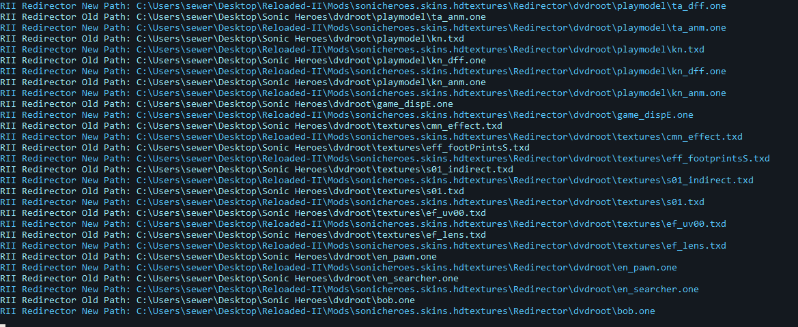
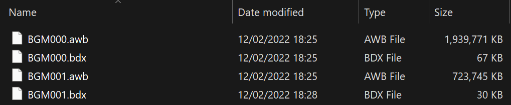
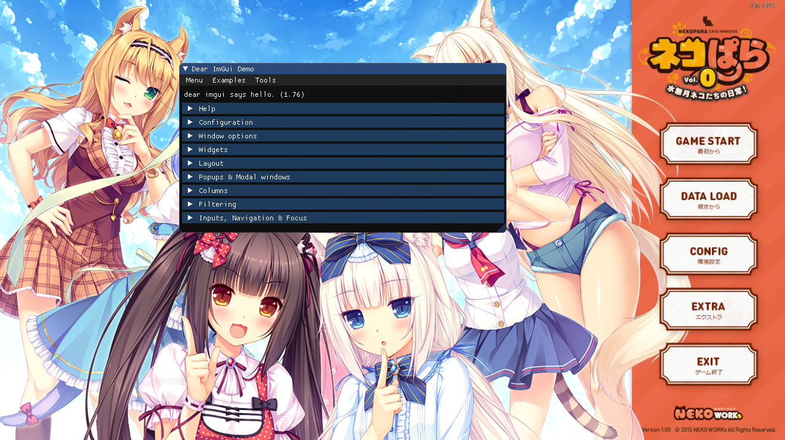
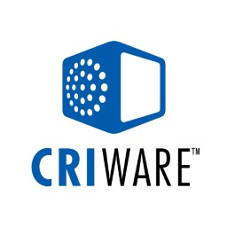
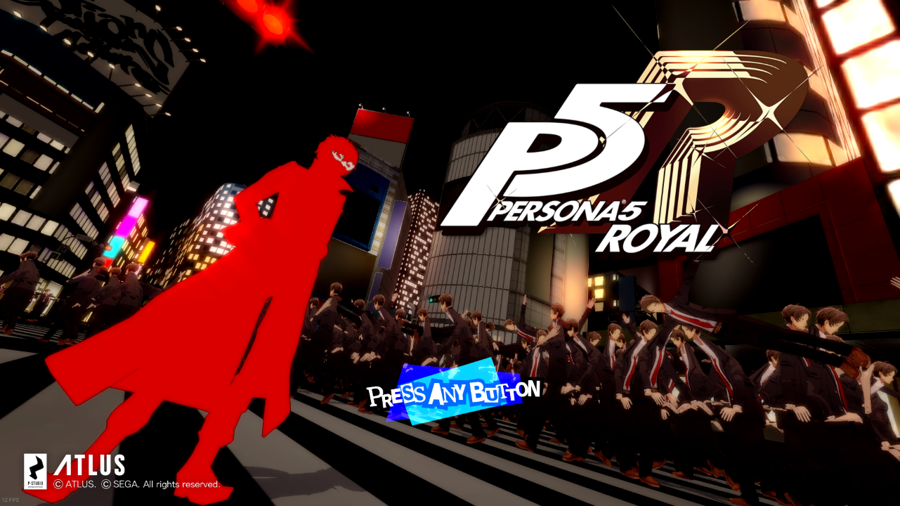
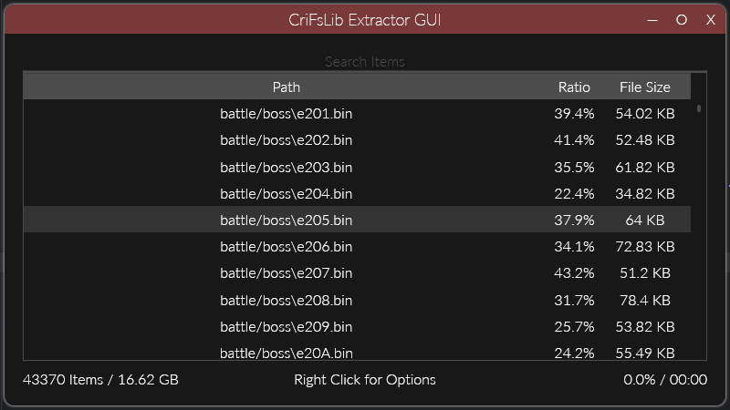

Games: Common & General
About
- Contains anything generic that is game related, but is generic and applies multiple games.
Reloaded-II (Mod Loader)
About
- The most advanced .NET based Mod Loader & Manager Combo for native games.
- Full Set of Game Hacking Libraries.
- Full Dedicated Wiki.
- Very High Performance.
- Modular And Extensible.
- Supports any 32 or 64-bit game.
- Integrated Logging.
- Dependency System.
- Execute Code before Game Runs a single Line.
- Load & Unload mods at runtime.
- Full Debugging Support including Edit & Continue.
- Automatic Installer & Updates.
- Support for Delta Compression in Updates.
- Mod Sets/Mod Collections.
- Does Not Modify Game Directory! Clean Uninstall!
- Disk Friendly: No file duplication, no extra residue.
- Controller Support.
- and much more...
Info
- Below are individual universal mods for Reloaded that don't fit any other category in this index.
File Redirector
Reloaded Universal File Redirector
- Summary: Allows adding/replacing game files without physically modifying game folder.
- Release Date: 2019 Source Code
- Features:
- API (dynamically add files etc.)
- Log all files accessed by application.
- Log replaced files.

What is Sonic Heroes loading right now? And what file is it being replaced with?
DirectInput Hotkey Fix
DInput Please Cooperate
- Summary: Fixes cases where a DirectInput application prevents you from using your hotkeys.
- Release Date: 2020 Source Code
File Emulation Framework
File Emulation Framework
- Summary: Framework for emulating archive files at Windows API level to enable modding of games without repacking massive (2GB+) archives.
- Release Date: 2022 Source Code
- Another crucial component to Reloaded's Core Philosophy. Don't touch game folder. No performance loss. Run anywhere.
- Features:
- Works with any application, game or tool even console emulators.
- Supported recursive/nested emulation of files, e.g. archive inside archive.
- Negligible (unnoticeable) overhead.
- Currently supports 5 archive formats (and counting!!).
- Extensive Unit Tests & asserts for runtime bug avoidance.

Imagine adding/removing/replacing files in these archives without requiring any unpacking or repacking, without using any additional disk space and with zero overhead in a way that works even with emulated games.
Yes, that's a thing now!
Dear ImGui Hook
Reloaded.Imgui.Hook
- Summary: Library to add Dear ImGui into your game mod.
- Release Date: 2020 Source Code
- Features:
- Inject Dear ImGui into any D3D9/11 game, x86 or x64.
- Extensible. Can add support for other APIs without recompiling.
- Supports viewports and docking. You can drag ImGui windows outside game window!!
- No Pause on Focus Loss [Universal, for any game].

CRI Middleware

Info
- The items below apply to all games using CRI Middleware between 2000 and 2021.
- It is particularly popular among developers from Japan.
CRI FileSystem V2 Hook
CRI FileSystem V2 Hook
- Summary: Adds Mod Support to Modern Games using CRI .CPK Archives.
- Release Date: 2022 Source Code
- Features:
- Should support games from 2017 onwards, maybe older.
- Hot Reload (Add/Replace files without app restart).
- API (dynamically add files etc.)
- Log files accessed by application.
- Replace music in AWB music Archives inside CPKs without using additional disk space, via an extension mod.

Well, this mod certainly enables some interesting use cases...
.CPK Reading Library
CriFsV2Lib
- Summary: Low level library for unpacking files from .CPK Archives.
- Release Date: 2022 Source Code
- Features:
- Minimalist, self contained in 25KiB.
- Maximum performance, all code hand tuned for best x64 assembly output.
- Faster than original CRI code present in retail games (in all parsing, decompression & descrambling).

Included GUI tool for extraction.
ADX w/ ID3
ADX ID3
- Summary: Custom variant of CRI's ADX Audio Format, with support for ID3 Meta Tags.
- Release Date: 2022 Source Code
- Intended for displaying information about current music track in-game with support mod(s).
- Features:
- Backwards compatible (games unaware of ID3 can still playback ADX).
- Reference ID3 Data Embedder/Extractor.
- Losslessly add ID3 metadata to existing files.
- Full stable specification on reading/writing ID3 data.
# dotnet Sewer56.Adx.Id3.Tool.dll view --source "Digital Circuit.adx"
Title: Digital Circuit (original version)
Artist(s): 瀬上純
Album: Shadow the Hedgehog: Original Soundtrax
Year: 2006
Genre(s): Soundtrack
Track: 44
Disc No: 1
Reading info from a custom ADX with ID3 support.
.AFS Library
AfsLib
- Summary: Library for parsing, unpacking & packing CRI .AFS archives.
- Release Date: 2019 Source Code
- Features:
- Fast file previewer (parse metadata near zero overhead).
- Low allocation.
var data = File.ReadAllBytes(afsFilePath);
if (AfsFileViewer.TryFromFile(data, out var afsViewer))
{
// Do stuff. This easy to use!
};
CRI FileSystem Hook
CRI FileSystem Hook
- Summary: Mod for CRI games roughly between 2000-2010 that fixes a number of issues.
- Release Date: 2019 Source Code
- Features:
- Fast cold startup times (~5 seconds to 0).
- Allows file replacement.
- Allows launching files not present during game launch.
SEGA PRS Compressor
dlang-prs
- Summary: High performance custom compressor/decompressor for SEGA's PRS compression format used since the Sega Saturn.
- Release Date: 2018 Source Code
- Fastest PRS Compressor/Decompressor with best compression ratio (at time of writing).